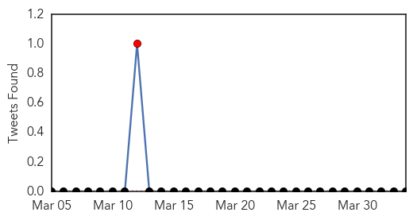
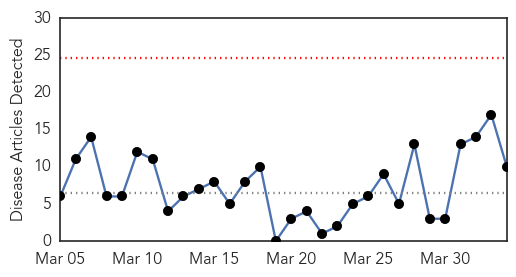
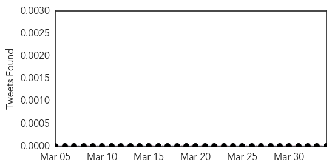
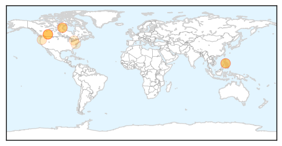
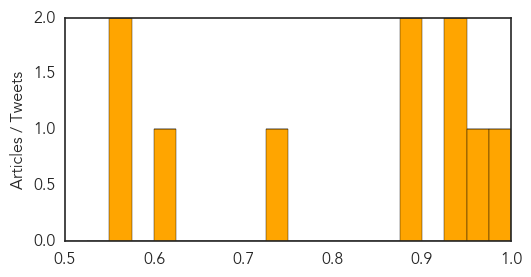

Meningitis
30-Day Web Trend
2 alerts, 0 warnings

30-Day Twitter Trend
1 alerts, 0 warnings

Article Locations

Article Confidences

Top Articles:
- 0.970
- Port health unit opens at Aflao
- 0.887
- Map: 3 people have died of meningitis in LA County this year
- 0.884
- 3 Men Die of Meningitis in LA County
- 0.846
- Three Deaths from Meningitis Among Young Gay Men with WeHo Ties, Health Department Reveals
- 0.676
- WeHo News
- 0.656
- 3 meningitis deaths reported in Los Angeles County
- 0.618
- Three die of meningitis outbreak in Los Angeles area
- 0.563
- Bacterial meningitis deaths of 3 gay men reported in Los Angeles County
Top Tweets:
-
No tweets found for Apr 03, 2014
Measles
30-Day Web Trend
0 alerts, 0 warnings

30-Day Twitter Trend
0 alerts, 0 warnings

Article Locations
Article Confidences
Top Articles:
- 0.990
- Two more measles cases confirmed in Alberta; officials warn more may be infected
- 0.960
- School staff, students line up for vaccine after measles case confirmed
- 0.947
- Measles In Edmonton Increase Cases In Alberta To 6
- 0.944
- Edmontonians warned after first case of measles confirmed in city since 2012
- 0.896
- Measles warning issued at 2 popular Calgary restaurants
- 0.896
- Measles warning issued at 2 popular Calgary restaurants
- 0.739
- Measles Outbreak Moves from Canada to United States
- 0.608
- More details on measles outbreak in Calgary
- 0.570
- Measles outbreak shows importance of education
- 0.561
- Editorial: Foolishness behind record measles cases
Top Tweets:
-
No tweets found for Apr 03, 2014